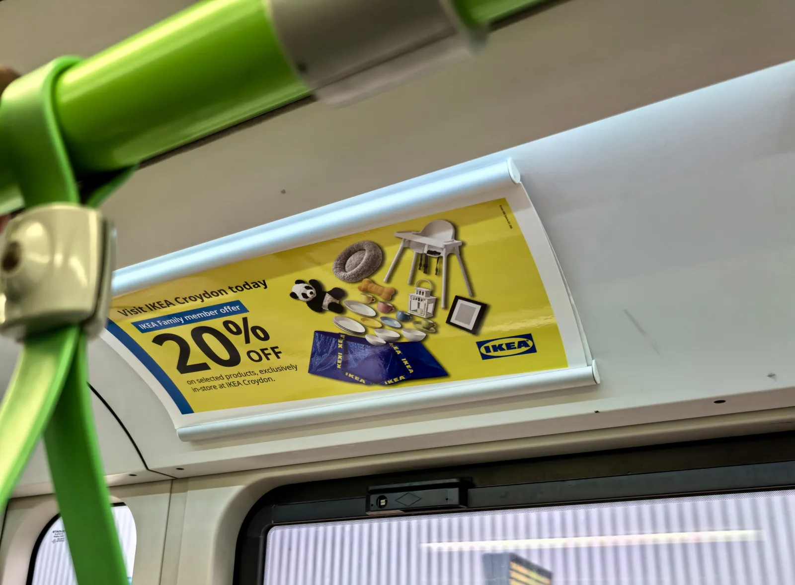
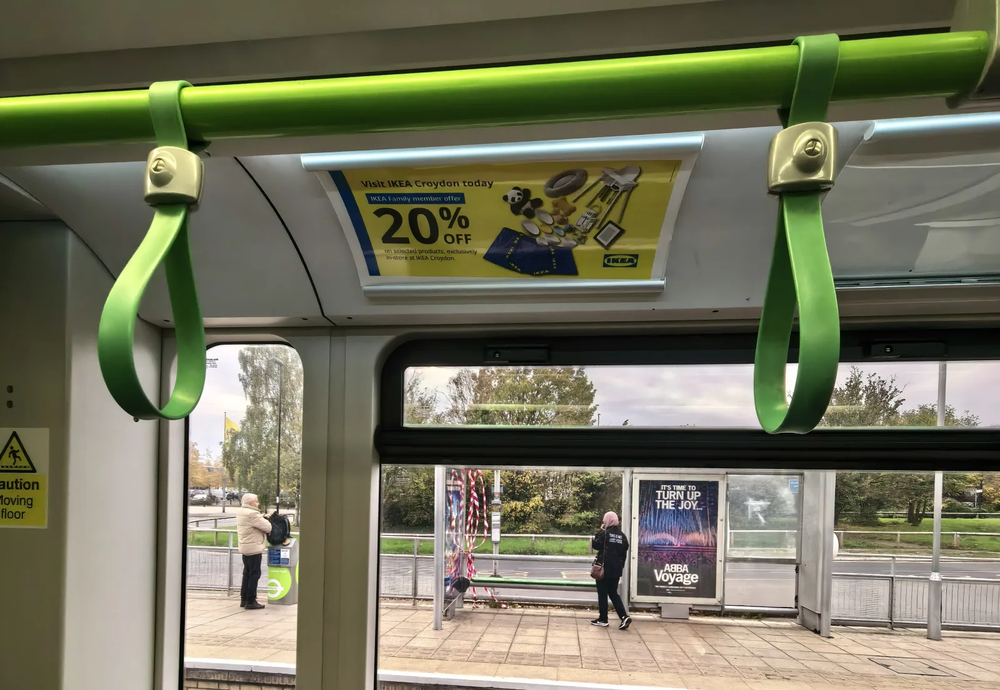
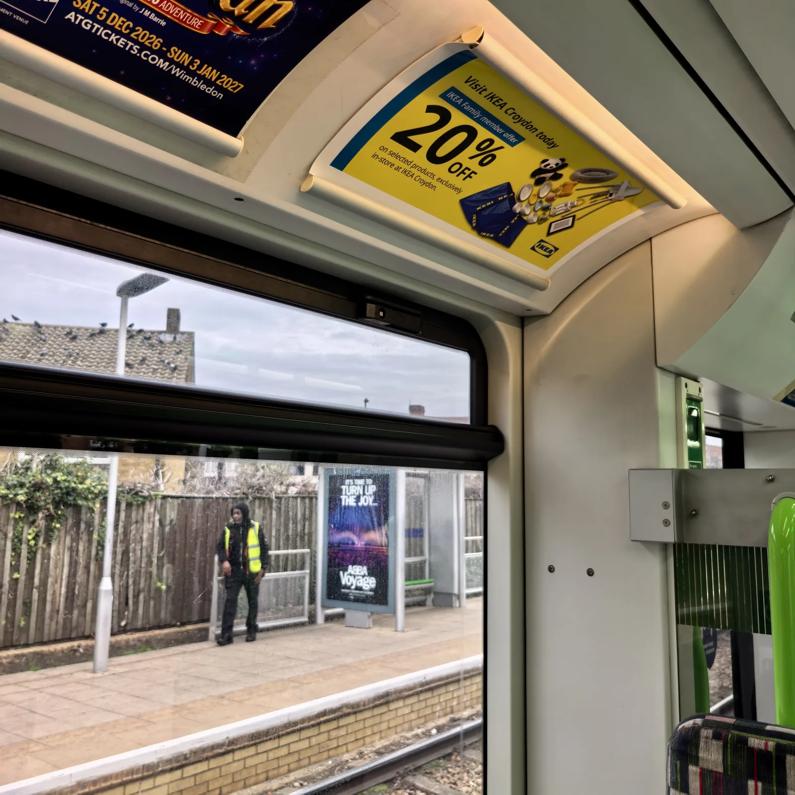
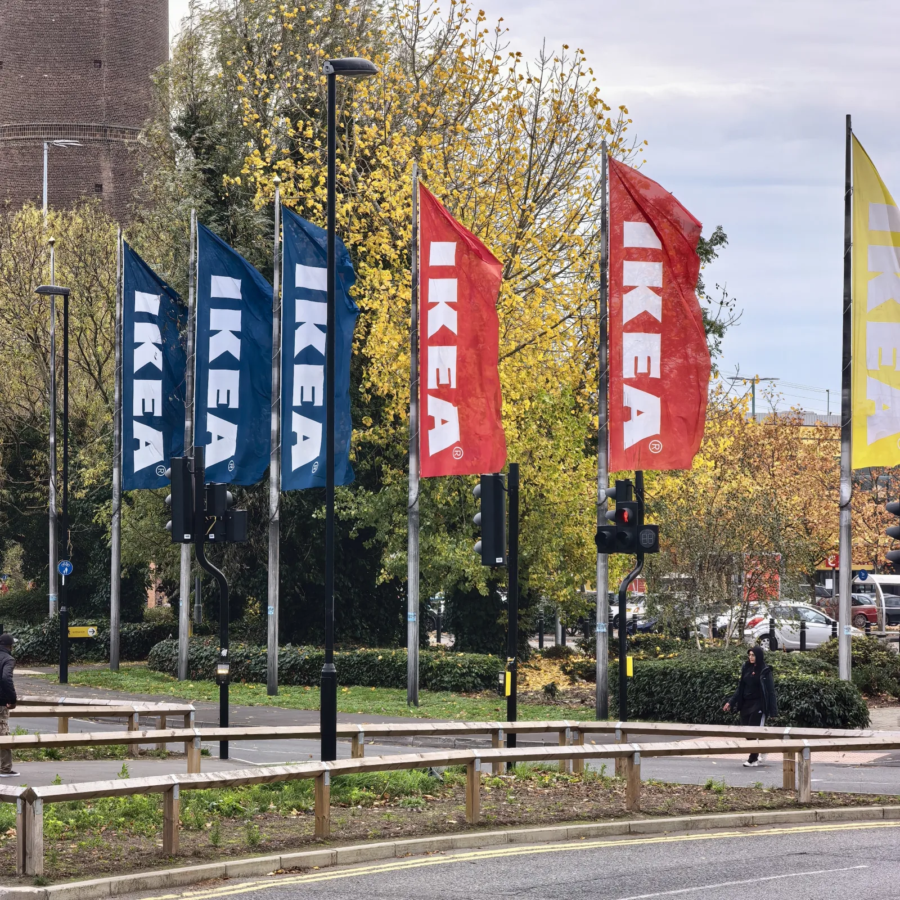

Objective
Drive footfall and in-store redemptions at one store, IKEA Croydon.

Case study · IKEA Croydon · South London · Tram
An 8-week Croydon Tram interior panel campaign used 10 to 15 minutes of captive dwell time to deliver 2.3 million impacts across South London and send shoppers to one store.
Read the storyDrive footfall and in-store redemptions at one store, IKEA Croydon.
Eye-level tram interior coving panels with 10 to 15 minutes of dwell.
The Croydon Tramlink corridor, linking South London homes to Purley Way.
2.3 million local impacts across a sustained 8-week run.
The campaign objective
When the commercial objective is driving retail footfall into a single bricks-and-mortar store, broad national media wastage is the enemy. The goal of this campaign was clear: generate immediate local awareness and in-store redemptions for an exclusive IKEA Family offer, 20% off selected products, exclusively in-store at IKEA Croydon.
Rather than paying for wasted impressions outside the store’s trading radius, Loud! OOH built a hyper-local out-of-home (OOH) media plan designed to reach shoppers living and commuting within direct reach of the Croydon store.
The format
To turn a promotional retail message into physical store visits, format selection is everything. Roadside billboards give passing drivers a two-to-three-second glance. Croydon Tram interior coving panels deliver an average 10 to 15 minutes of captive dwell time.
Positioned at natural eye level directly above the windows and the green grab rails, the panels sit in the line of sight of both standing and seated passengers. In a distraction-free environment for 10 to 15 minutes at a time, commuters don’t just glance at the advert: they read and re-read the copy several times during the journey. That extended exposure lets the 20% discount, the IKEA Family requirement and the Croydon store location sink in before passengers step off the tram.
Two to three seconds for a passing driver. Enough for a brand name, not for an offer with conditions attached.
10 to 15 minutes at eye level for a seated or standing passenger, with time to take in the offer, the membership rule and the store.
Locations & catchment
The geographic strategy focused entirely on the Croydon Tramlink network across South London. The tram network is the main transit route connecting dense residential neighbourhoods, including Wimbledon, Mitcham, Beckenham, New Addington and East Croydon, into Croydon town centre and the Purley Way retail corridor.
By placing the creative inside the tram fleet, the campaign reached shoppers on the same network that drops them within walking distance of the IKEA Croydon store flags, closing the gap between seeing the advert and redeeming the offer.
Wimbledon, Mitcham, Beckenham, New Addington and East Croydon: the homes inside the store’s trading radius.
10 to 15 minutes at eye level with the offer, on the route into town and the retail park.
Off the tram and a short walk to the store, where the offer is redeemed in person.
Campaign period & creative
Instead of spending the budget on a short two-week burst that disappears before shoppers plan their next homeware trip, the campaign was booked across a sustained 8-week campaign period.
Running continuously for two months let the schedule build frequency among daily commuters and weekend retail travellers, delivering 2.3 million total impacts.
The creative matched the precision of the media buy. A high-contrast yellow background and the familiar blue FRAKTA bag filled with home essentials structured the message for easy reading and re-reading during a 10 to 15 minute ride:
Visit IKEA Croydon today
20% off with an IKEA Family member offer
On selected products, exclusively in-store at IKEA Croydon
The offer, close up
Yellow background, the blue FRAKTA bag and three lines of copy, built to be read more than once.

Tram interiorEye level in the carriage
The panel sits above the windows and grab straps, in view of seated and standing passengers at every stop.

In transitA commuter’s view
What a passenger sees for 10 to 15 minutes beside the green grab rails, stop after stop.

Store arrivalIKEA Croydon, Purley Way
The store flags that greet shoppers a short walk from the tram, where the offer is redeemed.
The result
Smart format selection, captive dwell time and a catchment drawn around one store.
2.3M
Impacts
Across South London
8 weeks
Campaign period
Sustained retail frequency
10–15 min
Average dwell
Per passenger journey
1
Store
IKEA Croydon, Purley Way
Smart format selection. 10–15 minute captive dwell time. 2.3 million local impacts across an 8-week run.
Loud! OOH plans hyper-local out-of-home around a single store, venue or catchment, choosing formats for dwell time rather than headline reach. Tell us where your customers live and travel, and we’ll build the plan.